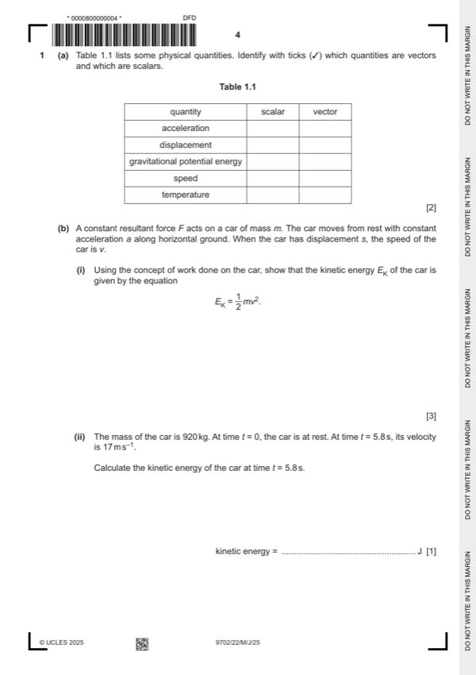
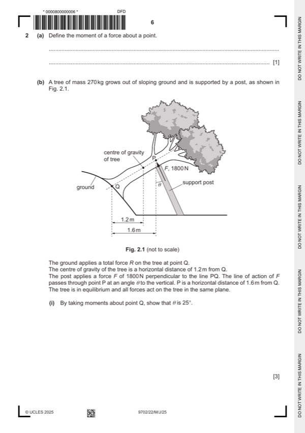
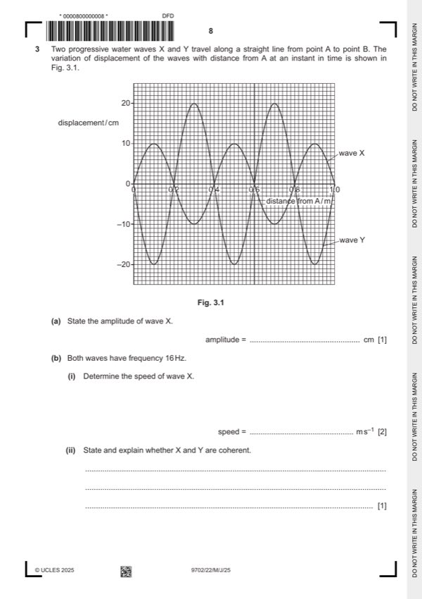
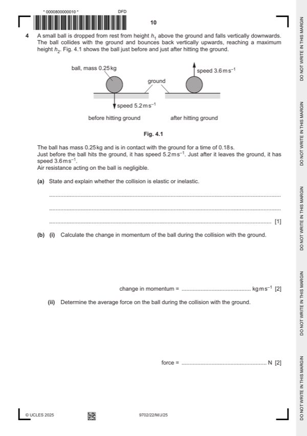
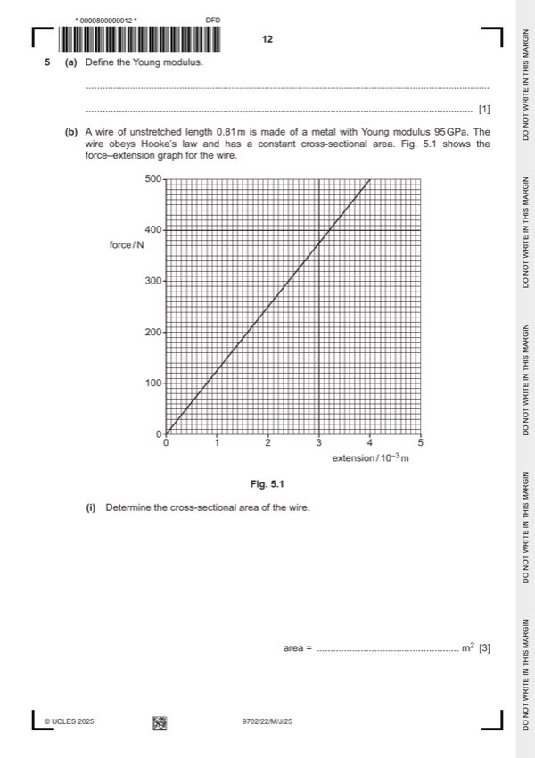
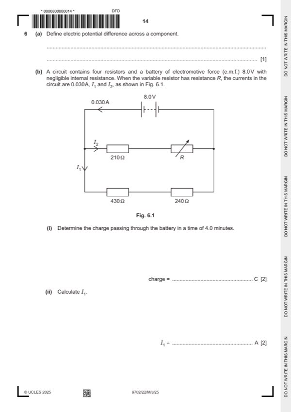

Question 0
Part 0 — solution
- [B1] Obtain/use: or −01( )
Mark points
- [B1] Obtain/use: or −01( )
Step-by-step solutions based on the mark scheme (not a mark-scheme dump).
Part 0 — solution

Part 1(a) — solution
Part 1(b)(i) — solution
Answer: OR (B1) · OR (B1) · OR (B1)
Part 1(b)(ii) — solution
Part 1(b)(iii) — solution
Part 1(b)(iv) — solution
Part 1 — solution

Part 2(a) — solution
Part 2(b)(i) — solution
Part 2(b)(ii) — solution
Part 2(b)(iii) — solution

Part 3(a) — solution
Part 3(b)(i) — solution
Part 3(b)(ii) — solution
Part 3(c) — solution
Part 3(d) — solution

Part 4(a) — solution
Answer: OR (B1)
Part 4(b)(i) — solution
Part 4(b)(ii) — solution
Answer: OR (C1)
Part 4(c) — solution

Part 5(a) — solution
Part 5(b)(i) — solution
Answer: OR (C1)
Part 5(b)(ii) — solution

Part 6(a) — solution
Part 6(b)(i) — solution
Part 6(b)(ii) — solution
Part 6(b)(iii) — solution
Part 6(b)(iv) — solution
Answer: OR (C1) · OR (C1)
Part 6(c) — solution
Answer: OR (A1)
Part 7(a) — solution
Part 7(b)(i) — solution
Part 7(b)(ii) — solution
Answer: 14 14 · B1
Part 7(c) — solution